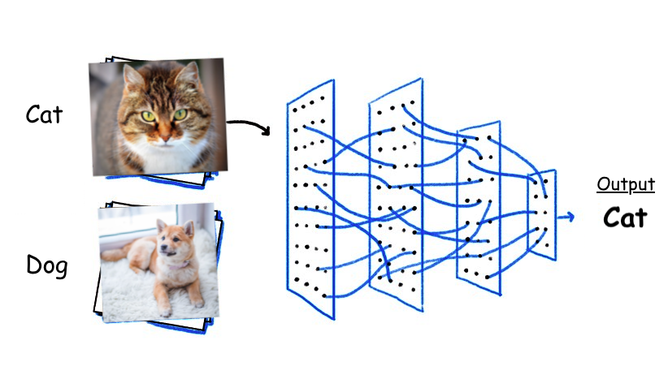
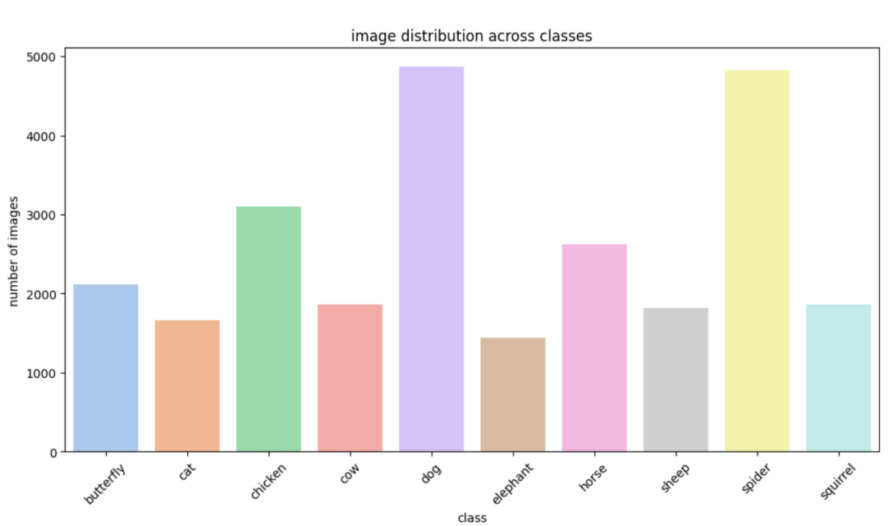
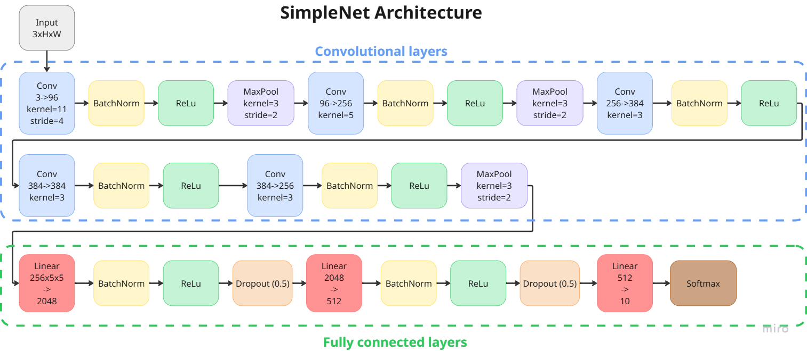
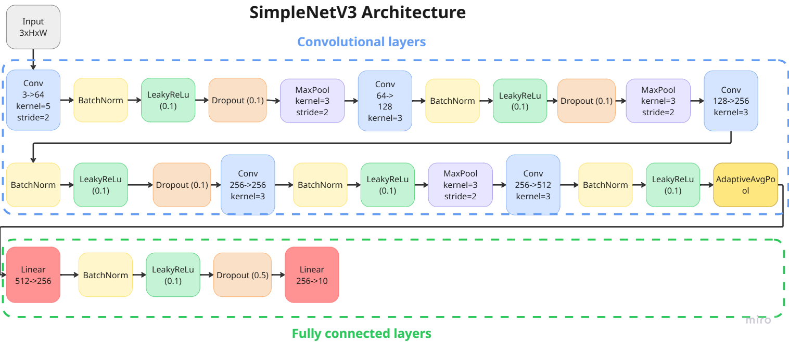

This project was developed as part of the Neural Networks course during my studies at FIIT STU. I worked on it as a team with my classmates Lenka & Martin ♡.
The goal of the project was to explore the class imbalance problem in the context of image classification. We trained CNN models to classify animal images across 10 categories and systematically compared how different strategies for handling imbalanced data — oversampling, undersampling, and training on the original imbalanced dataset — affect model performance.
The dataset contained approximately 28,000 animal images belonging to 10 classes: dog, cat, horse, spider, butterfly, chicken, sheep, cow, squirrel, and elephant — with significant class imbalance present from the start (ranging from ~1,000 to over 3,300 images per class).
I participated across the full deep learning pipeline — from exploratory data analysis and preprocessing to architecture design, training, and final evaluation across multiple experimental setups.

DataModule class handling data loading,
augmentation, and balancing. All images were resized to 224×224 pixels.
Training images underwent augmentation including random flips, rotations, affine transforms, and color jittering.
Dataset was split 70/15/15 into train, validation, and test subsets using a fixed seed.
To handle imbalance, we implemented a BalancerWrapper supporting
optional online oversampling or undersampling modes.


This project gave me a deep appreciation for how much data quality and distribution matter in deep learning — sometimes more than the model architecture itself. I learned how to design and implement a full image classification pipeline from scratch, including custom data loading, augmentation strategies, and architecture iteration.
The most important takeaway was understanding the real-world trade-offs between oversampling and undersampling. While oversampling delivered the best results, it also came with significantly higher training time and a greater risk of overfitting on synthetic data. Undersampling was faster but lost valuable information.